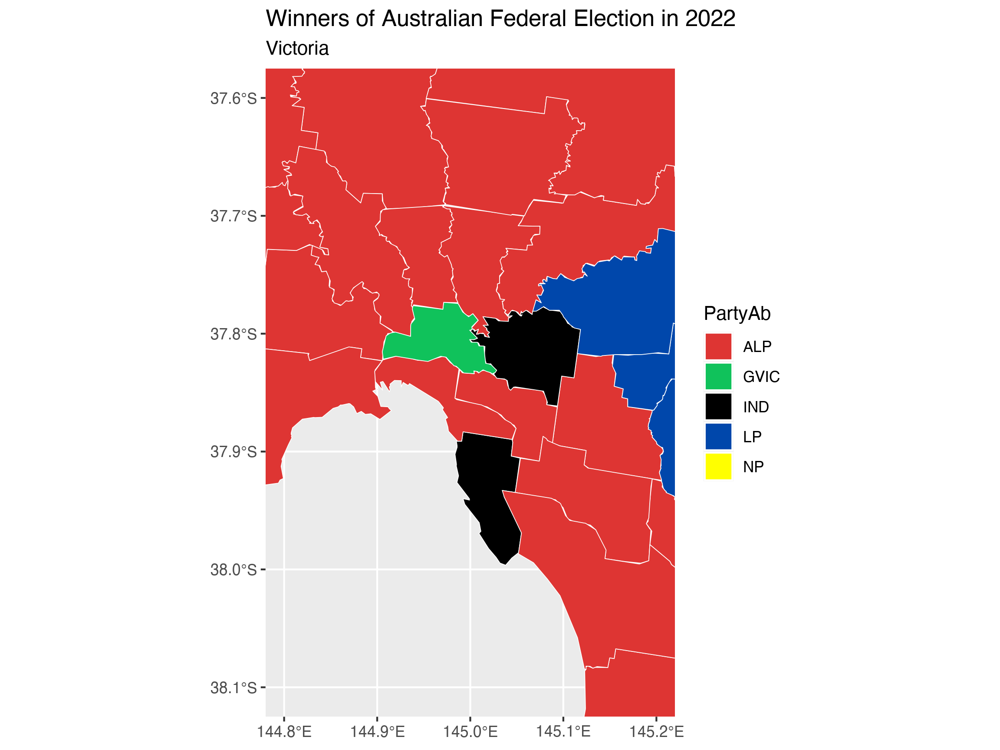
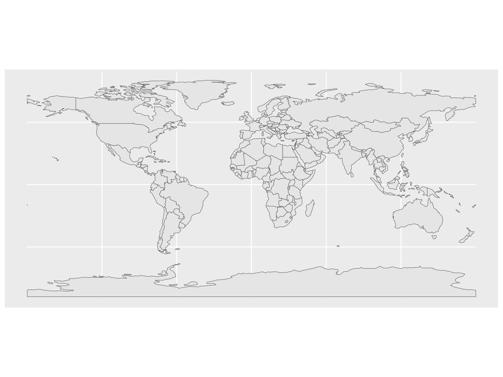
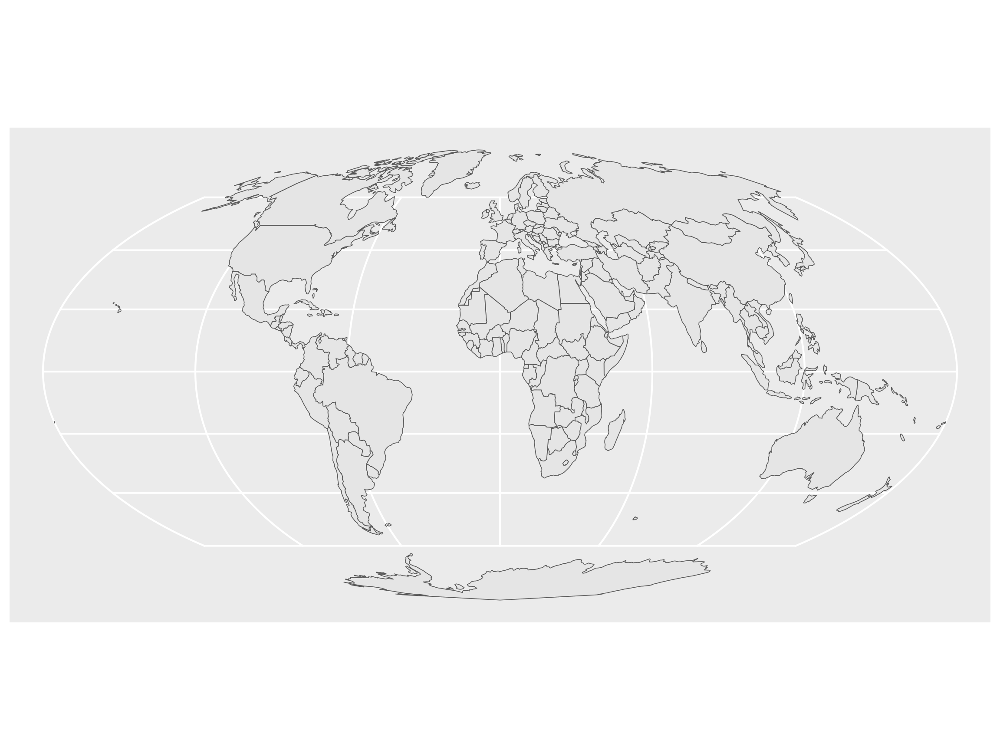
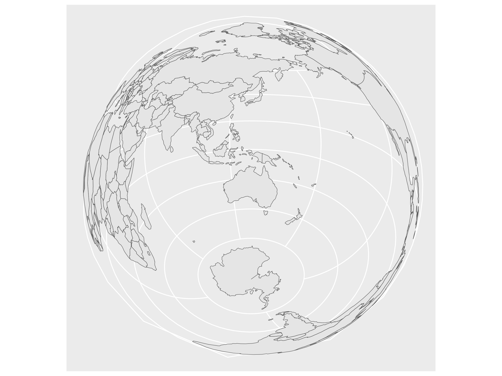

install.packages(c("sf", "spData", "terra"))Week 5 Tutorial
Learning Objectives
In this tutorial, you will be using data about the Australia Election. You will be learning how to:
- Work with map data in R
- Visualise map data in R
- Modify map projections
We are using the 2022 federal election data here for practice. On your assignment you will use the more recent election data.
Before your tutorial
Warning
There is lots of data to download for this tutorial. Please do it before you arrive at class!
1. Installing relevant R-packages
2. Get the distribution of preferences by candidate by division for the 2022 Australian Federal Election
3. Get the electoral district geographical boundaries
4. Look up the colours of the current political parties
5. To speed things up for Mac users
Exercise 1
Objective
Download, combine and wrangle the election data so it is ready for mapping!.
We will need this for the second exercise.
1.1 Load the packages you need
library(tidyverse)
library(sf)1.2 Import the election data
url = "https://results.aec.gov.au/27966/Website/Downloads/HouseDopByDivisionDownload-27966.csv"
election_data <- read_csv(url, skip = 1) 1.3 Wrangle your data so we only keep the winners from the election.
election_data = election_data |>
filter(CalculationType == "Preference Count" &
Elected == "Y" &
CountNumber == 0) |>
mutate(DivisionNm = toupper(DivisionNm))1.4 Read the map data using the code below.
Important
We do not use read_csv here. We need to use read_sf as this is a map.
vic_map_path = "data/vic-july-2021-esri/E_VIC21_region.shp"
vic_election_map <- read_sf(here::here(vic_map_path)) |>
# to match up with election data
mutate(DivisionNm = toupper(Elect_div)) |>
sf::st_simplify(dTolerance = 100)1.5 Combine the election data with the election boundaries.
vic_election_map = vic_election_map |>
left_join(election_data, by = "DivisionNm")1.6 Determine an appropriate colour for the political parties.
We will need these to colour code our map.
election_data |>
filter(StateAb == "VIC") |>
select(PartyAb) |>
distinct(PartyAb)# A tibble: 5 × 1
PartyAb
<chr>
1 LP
2 ALP
3 NP
4 IND
5 GVIC Using the parliamentary handbook, we can match the political party with their associated colour.
party_colors <- c(
"ALP" = "#DE3533",
"GVIC" = "#10C25B",
"IND" = "#000000",
"LP" = "#0047AB",
"NP" = "#FFFF00"
)You can change these if you’d like to. Many of the inner city independents used the teal colour.
Exercise 2
Draw a map of Victoria and colour the electorate districts with the political party that won that district in the 2022 federal election.
2.1 Draw a map that looks like below.

To do this we need to use mapping functions that work with ggplot2.
The function
geom_sfis used to define the aesthetics of how to plot the map.The function
coord_sfis used to define the coordinate range of the plot.
Hint 1
vic_election_map |>
ggplot() +
geom_sf(aes(geometry = ???, fill = ???), color = "black") Hint 2
vic_election_map |>
ggplot() +
geom_sf(aes(geometry = geometry, fill = PartyAb), color = "black") +
coord_sf(xlim = c(???, ???), ylim = c(???, ???)) +Solution
vic_election_map |>
ggplot() +
geom_sf(aes(geometry = geometry, fill = PartyAb),
color = "white"
) +
coord_sf(xlim = c(144.8, 145.2), ylim = c(-38.1, -37.6)) +
scale_fill_manual(values = party_colors) +
ggtitle("Winners of Australian Federal Election in 2022",
subtitle = "Victoria"
)2.2 Modify the map drawn in 2.1. so that the legend only shows the parties shown in the visualisation.
You may find the function st_crop useful here.
Hint 3
vic_election_map |>
st_crop(xmin = ???, xmax = ???,
ymin = ???, ymax = ???)2.3 Finally add the text labels of the name of the electoral division for Melbourne, Menzies and Macnamara, like below.
The function geom_sf_label can be used to add labels to a map.
Hint 4
vic_map_subset = vic_election_map %>%
filter(Elect_div %in% c("Melbourne", "Menzies", "Macnamara"))
vic_election_map |>
ggplot() +
geom_sf(aes(geometry = geometry), color = "black") +
geom_sf_label(data = vic_map_subset, aes(label = ???, geometry = ???))Exercise 3: In your own time
Learn to modify the map projection The world is not flat. Let’s learn how to deal with that in the mapping world.
Load the world map data contained in spData.
library(spData)
data(world, package = "spData")Stuck on where to start:
## Look at the last example in the help
?geom_sf3.1 Plot the map data world using ggplot2.

3.2 Mollweide projection is a map projection that preserves area relationships. Apply this projection by settingcrs = "+proj=moll" in the st_transform function and visualise the result.

3.3 Modify the projection so that it transforms the coordinates to the Lambert azimuthal equal-area projection with Australia in the center (25.27°S, 133.78°E).

Exercise 4: Extend yourself!
Repeat exercises 1 and 2 above but for all of Australia.
There will be a few things you should watch our for:
The increase in map size will make reading the files and plotting the data much slower compared to Victoria. So be sure to use
st_simplify().You may also encounter an odd error with this map where you need to use
st_valid()to redraw the polygons correctly.For the whole of Australia there may be other parties for which we have yet to download the colours.
There may also be some small differences in how the electoral divisions are named. You may need to handle some edge cases.